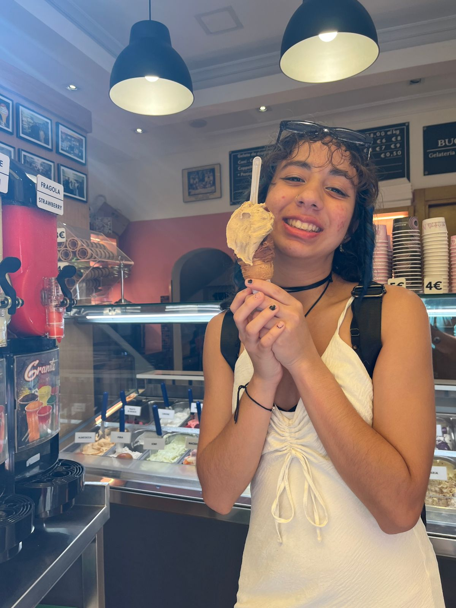
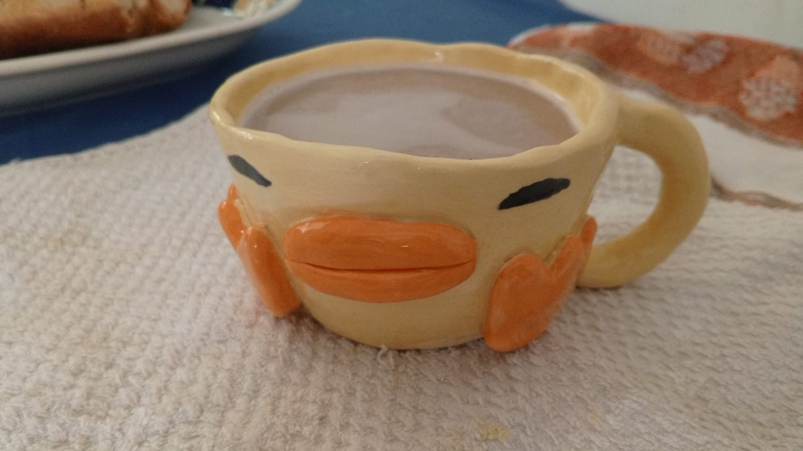
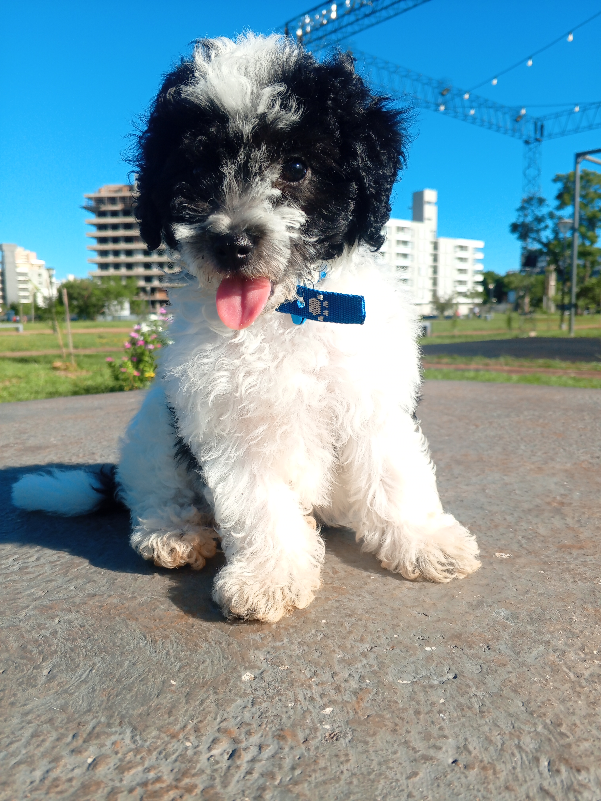
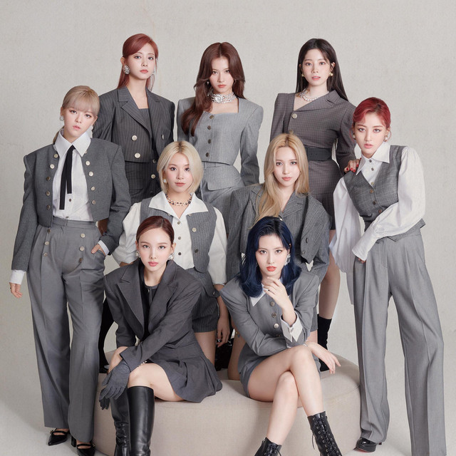

En esta página podrás aprender un poco sobre Sotti 💁♀️

Acerca de Sofi...
Soy una persona activa que le gusta hacer deportes y hacer manualidades, me encanta salir y hacer todo tipo de planes. Mi color favorito es el verde. Mi serie favorita es Miraculous Ladybug. Mis mejores amigos son Max y Victoria. Me encanta la comida picante y ácida.

En mi tiempo libre...
Me gusta bailar, probar cosas nuevas como nuevos deportes o manualidades. Hago cosas con porcelana fría, con arcilla, flores de tela, flores de limpiapipas y flores de papel. Me gusta regalar las manualidades que hago en mi tiempo libre. En cuanto al deporte hice por mucho tiempo voley y hip hop, pero ahora solo hago Crossfit y me gusta mucho.

Nino nació el 21 de octubre de 2025, lo adopté el 29 de noviembre de 2025.

Twice es mi grupo favorito de kpop, es un grupo conformado por nueve integrantes; Im Nayeon, Yoo Jeongyeon, Hirai Momo, Minatozaki Sana, Park Jihyo, Myoui Mina,Kim Dahyun, Son Chaeyoung y Chou Tzuyu. Debutaron através de un programa de supervivencia llamado Sixteen, el cual se realizó en agosto de 2015. En octubre de 2015 debutaron con la canción "Like Ohh Ahh" y lanzaron su primer albúm llamado "The Story Begins". Soy fan de ellas desde que descubrí a canción "Fancy" en 2019, desde ahí son mi grupo favorito, actualmente mi canción favorita de Twice es "Heartbreak Avenue" la cual es un b-side de su último albúm "This Is For"